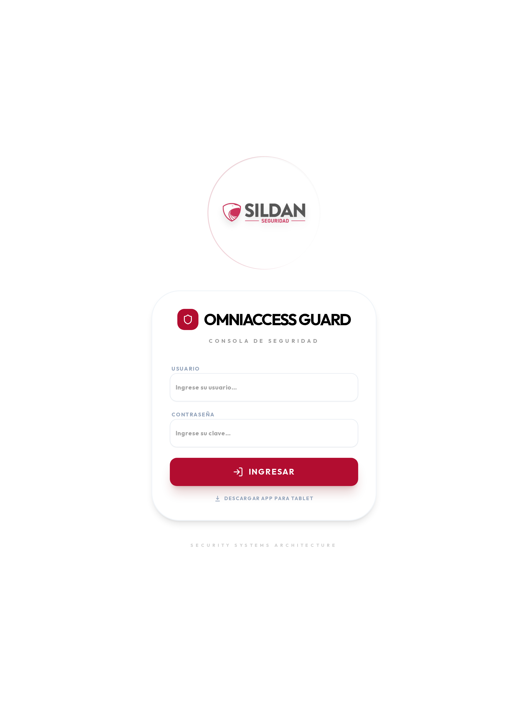
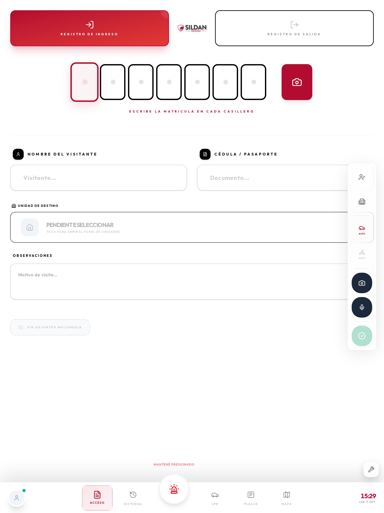
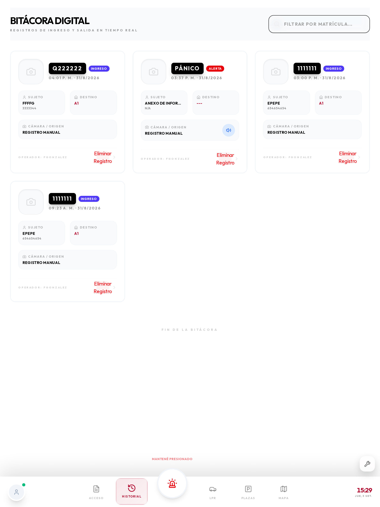
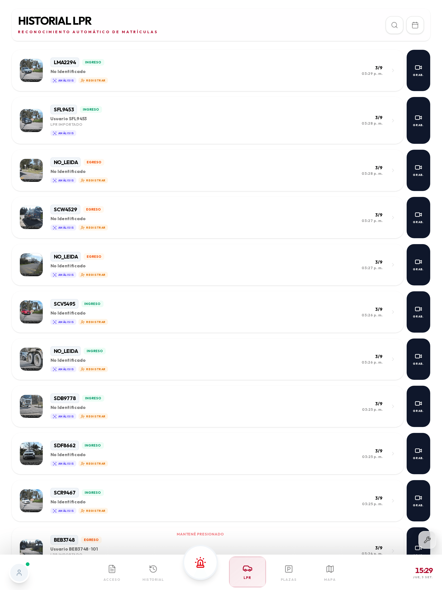
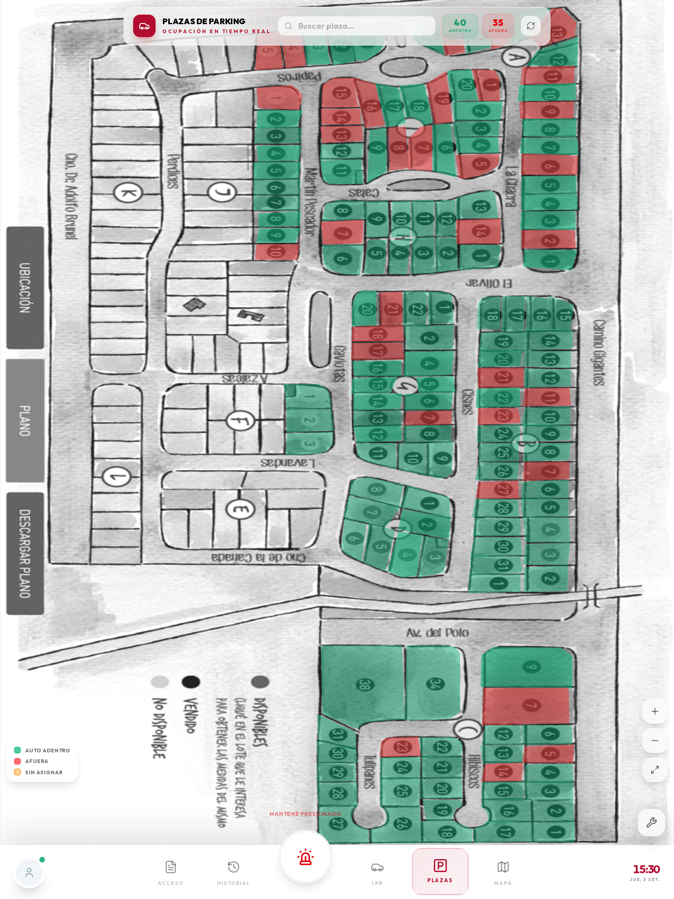
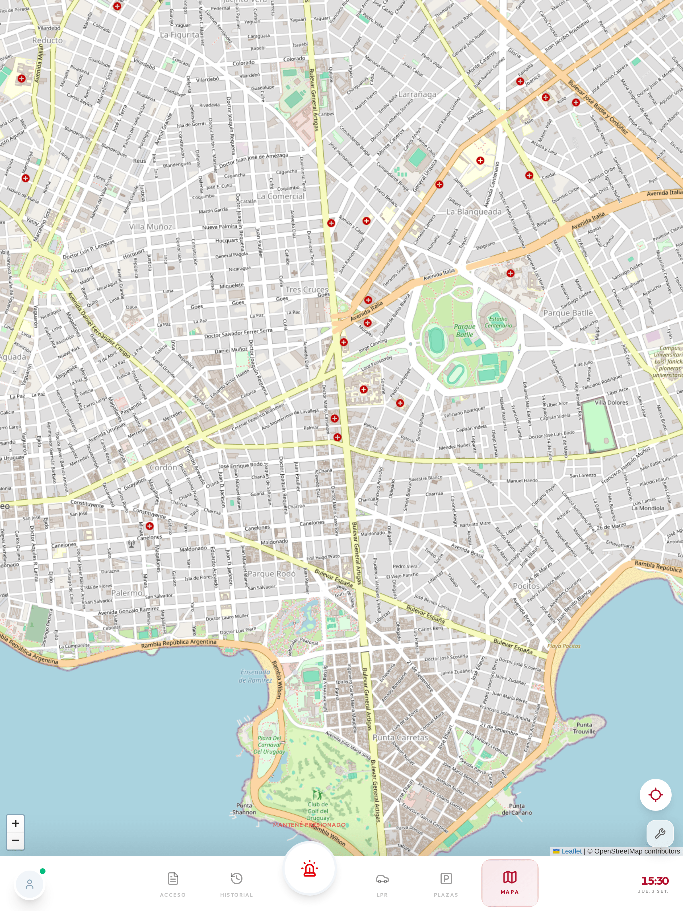

El guardia que recorre: rondas, pánico, hombre caído, bitácora y mapa desde la tablet.
La consola del guardia es la aplicación que se usa en la tablet de la garita y en las tablets que llevan los guardias que recorren. Es la misma aplicación en los dos casos: cambia lo que se usa más, no lo que hay.
Hace cuatro cosas:
| Navegador (tablet o PC) | Aplicación Android (APK) | |
|---|---|---|
| Registro de visitantes | Sí | Sí |
| Historial y LPR | Sí | Sí |
| Plazas y mapa | Sí | Sí |
| Botón de pánico en pantalla | Sí | Sí |
| Pánico con la pantalla bloqueada | No | Sí (botón de volumen) |
| Rondas con etiquetas NFC | No | Sí |
| Hombre caído | No | Sí |
| Posición GPS en segundo plano | Limitada | Sí |
| Modo kiosco (no se puede salir) | No | Sí |
La aplicación Android es la que se entrega a los guardias que recorren. En la garita, donde la tablet está fija y enchufada, el navegador alcanza.
| Requisito | Mínimo | Recomendado |
|---|---|---|
| Sistema | Android 9 | Android 12 o superior |
| Pantalla | 8″ | 10″ |
| Memoria | 3 GB | 4 GB |
| NFC | Solo para rondas | Sí |
| GPS | Sí | Sí |
| Red | WiFi del predio | WiFi + datos de respaldo |
La tablet que sale a recorrer tiene que quedar dedicada. Si se usa también para música o mensajería, Android termina cerrando la aplicación en segundo plano y se pierden posición y rondas.

/guard al final).La sesión queda abierta durante el turno. Desde la pantalla de ingreso también se puede descargar la aplicación para tablet con el enlace de abajo.
El ingreso demora 1 a 3 segundos con WiFi. Si la contraseña es correcta pero no entra, el problema es de red: fijate el indicador de conexión.
Es la navegación principal y está siempre visible:
| Botón | Para qué |
|---|---|
| Acceso | Registrar el ingreso o egreso de un visitante |
| Historial | Ver los registros del turno |
| Pánico (centro, rojo) | Pedir auxilio manteniendo presionado |
| LPR | Ver las matrículas que leyeron las cámaras |
| Plazas | Ocupación del estacionamiento |
| Mapa | Ubicación de guardias y cámaras |
A la izquierda del todo está tu perfil (con el punto verde de conexión) y a la derecha, la hora y la fecha.
Es la pantalla que más se usa en la garita. Sirve para dejar constancia de quién entró, con qué vehículo y a dónde iba.

12345678El registro se guarda en menos de 2 segundos. Queda visible de inmediato en el puesto de monitoreo y en el historial.
| Botón | Qué hace |
|---|---|
| Persona | Marca el tipo de visitante |
| Edificio | Elige la unidad de destino |
| Auto / Moto | Tipo de vehículo (cambia el formato de matrícula esperado) |
| Cámara | Saca una foto y la adjunta |
| Micrófono | Graba una nota de voz |
| Confirmar (verde) | Guarda el registro |
Al elegir Registro de salida, si el visitante fue registrado al entrar, el sistema completa los datos automáticamente al escribir la matrícula, y calcula cuánto tiempo estuvo adentro.

Muestra todo lo registrado, con hora, matrícula, visitante y destino. Sirve para dos cosas:
Arriba tiene búsqueda y filtro por fecha.
Es la lista de lo que están leyendo las cámaras de los portones, en vivo.

1234567NO_LEIDA si la cámara no pudo).| Acción | Qué hace |
|---|---|
| Análisis | Abre la ficha completa: perfil de la matrícula, historial y datos |
| Registrar | Da de alta ese vehículo, con la matrícula ya cargada |
| Grab. | Abre la grabación del NVR en ese segundo exacto |
Cuando una matrícula figura como "No identificado" y el vehículo entra habitualmente, conviene registrarlo: cada vez que pasa genera un acceso denegado que ensucia las estadísticas.
Arriba a la derecha hay búsqueda por matrícula y filtro por fecha, para encontrar algo puntual sin salir de la tablet.

Sobre la foto real del estacionamiento, cada plaza se pinta según su estado:
La ocupación se calcula con las lecturas de matrícula. Tocando una plaza ocupada se ve qué vehículo está y desde cuándo.

Muestra el plano del predio con:
La posición se envía cada 10 segundos con la aplicación en pantalla, y cada 30 segundos con la pantalla apagada (solo en la aplicación Android). Es un compromiso entre precisión y duración de la batería.
Es la función más importante. Está diseñada para que no se dispare por accidente y para que funcione cuando hace falta.
Desde la aplicación: mantené presionado el botón rojo del centro de la barra inferior. Debajo dice "Mantené presionado". Al soltarlo antes de tiempo no pasa nada — es a propósito.
Con la pantalla bloqueada (solo aplicación Android): presioná el botón de volumen varias veces seguidas. Se habilita durante la instalación.
No hay activación por sacudida ni por gesto: se descartó porque genera falsas alarmas, y una alarma en la que nadie confía no sirve.
En menos de 3 segundos:
Del momento en que soltás el botón a que suene en el puesto pasan 2 a 4 segundos con WiFi. Sin señal, la tablet reintenta y avisa en pantalla que la alerta está pendiente.
Avisá por radio al puesto. La alerta queda registrada igual — y está bien que quede: lo que se anota es que fue falsa, no se borra.
Estas funciones no existen en el navegador: requieren la aplicación instalada.
Cada punto de control tiene una etiqueta pegada en el predio.
No hay que abrir nada: funciona aunque estés en otra pantalla.
La marca se registra en menos de 2 segundos con WiFi. Sin señal queda guardada y se sube sola: no esperes parado al lado del punto.
Si un punto tiene horario asignado y vence sin marcarse, se genera una alerta en el puesto. No es un reproche automático: puede haber una razón. Por eso conviene dejarla anotada.
La tablet vigila su propio movimiento. Si queda inmóvil y horizontal más del tiempo configurado (habitualmente 60 segundos):
Para cancelar, tocá Estoy bien.
Si tenés que dejar la tablet quieta un rato, apoyala de canto o en el bolsillo. La posición horizontal es parte de lo que dispara la detección.
La aplicación queda fija: no se puede salir a otras aplicaciones ni a los ajustes. Para salir (solo el técnico): mantener presionado el logo 5 segundos e ingresar la clave de administración.
La aplicación no está en Google Play: se descarga desde el propio sistema.
/guard.| Permiso | Para qué | Si falta |
|---|---|---|
| Ubicación (siempre) | Posición en el mapa y en el pánico | No aparecés en el mapa |
| Cámara | Fotos de patentes y visitantes | No se pueden adjuntar fotos |
| NFC | Rondas | No se pueden marcar puntos |
| Notificaciones | Alertas y avisos de ronda | No te enterás de nada con la app cerrada |
| Segundo plano | Que el servicio siga vivo | Se pierde posición con la pantalla apagada |
| Accesibilidad (opcional) | Pánico por volumen bloqueado | Solo funciona el pánico en pantalla |
La optimización de batería es la causa número uno de "la tablet dejó de reportar posición". Buscá la aplicación en Ajustes → Batería → Optimización y ponela en No optimizar.
Cada turno: cargarla al terminar y entregarla con más del 50 %. Verificar que el punto de conexión esté verde antes de salir.
Cada semana: reiniciar la tablet. Android acumula procesos y la aplicación se vuelve lenta. Limpiar la pantalla y el dorso (donde está el NFC).
Es el punto de color junto a tu perfil, abajo a la izquierda.
| Color | Significa | Qué podés hacer |
|---|---|---|
| Verde | Conectado | Todo |
| Ámbar | Sin conexión, con datos por subir | Registrar y marcar rondas (se guardan) |
| Rojo | Sin conexión hace rato | Lo mismo; avisá al puesto por radio |
| Síntoma | Qué hacer |
|---|---|
| No lee las etiquetas NFC | Verificá que el NFC esté activado; acercá el dorso, no el frente |
| No aparezco en el mapa | Ubicación en "siempre" y salí al exterior 30 segundos |
| La aplicación se cierra sola | Optimización de batería: ponela en "No optimizar" |
| Punto rojo con WiFi conectado | El servidor no responde: avisá al puesto |
| La lista de LPR no se actualiza | Deslizá hacia abajo para refrescar; si sigue, revisá la conexión |
| No responde a nada | Mantené el botón de encendido 10 segundos para forzar el reinicio |
Si la tablet se pierde o la roban, avisá de inmediato: desde el panel se le revoca el acceso y deja de recibir y enviar datos.
¿Si se me apaga la tablet pierdo lo que registré? No. Todo se guarda en la tablet apenas se confirma, y se sube cuando hay señal.
¿Puedo usar mi celular? Para el navegador sí, con limitaciones de pantalla. Para las funciones de ronda, pánico bloqueado y hombre caído hace falta la aplicación en una tablet dedicada.
¿El supervisor ve todo lo que hago? Ve tu posición mientras estás en turno, lo que registrás y las rondas que marcás. No tiene acceso remoto al micrófono ni a la cámara.
¿Qué pasa si dos guardias usan la misma tablet? Cada uno abre sesión con su usuario. Lo registrado queda a nombre de quien tenía la sesión abierta.
¿Cuánto dura la batería? Una jornada de 8 horas usa entre 25 % y 40 % con la configuración de fábrica. Si consume mucho más, revisá que no haya otras aplicaciones corriendo.